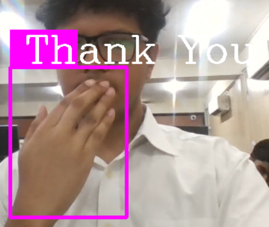
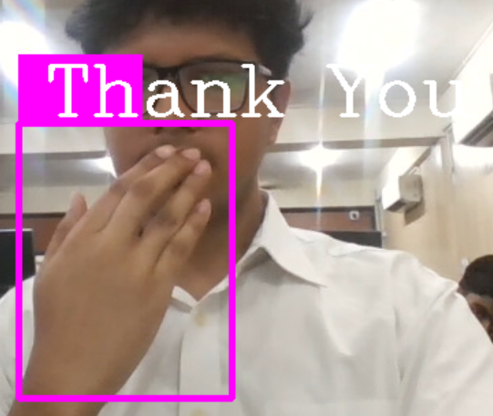

Sign Language Learning Web App
1. Empathize: Understand Users' Needs
Identify Target Users: Deaf and mute individuals who want to learn sign language.
User Research: Conduct surveys or interviews to understand their challenges in learning sign language.
Key Insights: Real-time feedback and interactive learning are crucial.
2. Define: Clarify the Problem
Problem Statement: Deaf and mute individuals need an interactive and user-friendly platform to learn sign language effectively.
Requirements:
- Real-time gesture recognition.
- Step-by-step learning modules for alphabets and words.
- Performance review and feedback.
3. Ideate: Generate Solutions
Brainstorming: Generate ideas for interactive features, such as using a webcam for gesture recognition and providing immediate feedback.
Prioritization: Decide on core features like learning modules, gesture recognition, and performance review.
4. Prototype: Create Solutions
Front-End Development:
- Build interactive interfaces using HTML, CSS, and JavaScript.
- Incorporate animations for an engaging learning experience.
Back-End Development:
- Use Flask framework to integrate front-end and back-end seamlessly.
- Develop APIs for handling user data and providing feedback.
Machine Learning Integration:
- Train and integrate the ML model (keras_model.h5) to recognize sign language gestures using TensorFlow and Keras.
- Use OpenCV for video processing to capture and interpret gestures.
5. Test: Evaluate Solutions
User Testing: Conduct usability tests with actual users to gather feedback on the learning modules and gesture recognition accuracy.
Iterate: Refine the application based on user feedback, improving the interface and ML model accuracy.
Example Learning Flow:
Select Learning Module:
Users choose between "Learn Alphabets" and "Learn Words".
Gesture Recognition:
The app captures gestures via webcam and uses the ML model to interpret them.
Learning Feedback:
- For alphabets: Displays recognized letters and suggests corrections.
- For words: Guides users through word gestures step-by-step with visual aids.
Completion and Review:
Users review their performance and can retry exercises.
Technologies Used:
- Front-End: HTML, CSS, JavaScript
- Back-End: Flask (Python Framework)
- Machine Learning Framework: TensorFlow and Keras
- Other Tools: OpenCV for video processing
Installation and Setup:
Clone Repository:
git clone <repository-url>
cd <repository-directory>Set Up Virtual Environment:
python -m venv venv
source venv/bin/activate # For Linux/Mac
venv\Scripts\activate # For WindowsInstall Dependencies:
pip install -r requirements.txtRun the Application:
python app.pyVisual Aids:
Images
 
 About Us
We are Team Techies_133, a group from the IT 2026 batch at NIET, specializing in Information Technology. Our team members are: Vaibhav Bajpai, Mohammad Ahmad, Mohammad Rayyan, Saumya Singh, Raj Jaiswal, and Abhishek. Together, we are dedicated to leveraging technology to create impactful solutions.
Conclusion
This Sign Language Learning Web App aims to provide an interactive and effective platform for deaf and mute individuals to learn sign language through real-time feedback and engaging learning modules.